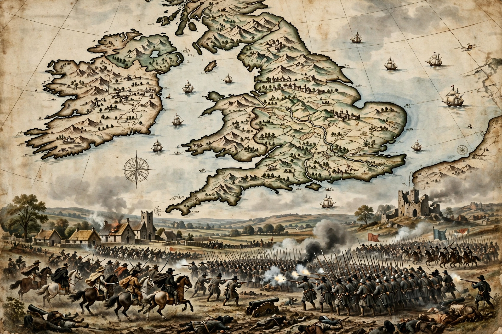

The Wars of the Three Kingdoms, sometimes known as the British Civil Wars, were a series of intertwined civil wars and political machinations that took place between 1639 and 1653 in the kingdoms of England, Scotland and Ireland — at that time separate kingdoms united only in a personal union under Charles I. The best known of these conflicts is the English Civil War.

Unlike England, where the wars were largely about how the kingdom should be governed — by an absolute monarch or a constitutional monarchy — the wars in Scotland and Ireland had religious and national dimensions as well. Charles I's attempts to impose religious uniformity, including a new prayer book in Scotland in 1637, provoked the Bishops' Wars (1639–1640), in which Scottish Covenanters defeated royal forces and forced Charles to recall the English Parliament, ending eleven years of Personal Rule.
The Irish Rebellion of 1641 saw Catholic Confederates establish a government at Kilkenny. In England, war broke out in 1642 between Royalists supporting Charles and Parliamentarians led in the field eventually by Oliver Cromwell and the New Model Army. The First English Civil War ended in 1646 with Charles in custody. A Second Civil War in 1648, involving a Scottish invasion in support of the king, was defeated at Preston. Charles was tried and executed in January 1649.
Cromwell then led the conquest of Ireland (1649–1653), marked by sieges at Drogheda and Wexford, and defeated Scottish forces at Dunbar (1650) and Worcester (1651), effectively ending the wars.
The wars established the precedent that an English monarch could not govern without Parliament's consent, although the Restoration of Charles II in 1660 restored the monarchy. Ireland and Scotland were incorporated into the Commonwealth. Casualties, particularly in Ireland from war, famine and plague, were proportionally very high.
This article is a recreation from memory.